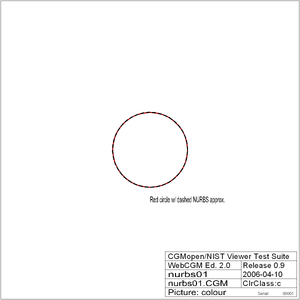

NURBS Test Page #1
Source image
Reference image

NURBS01 test - This test is passed if both images look alike. The black dashed NURBS curve should correspond to the red reference circle behind it, to the visual accuracy of the picture (the actual deviation is less than 0.01%).